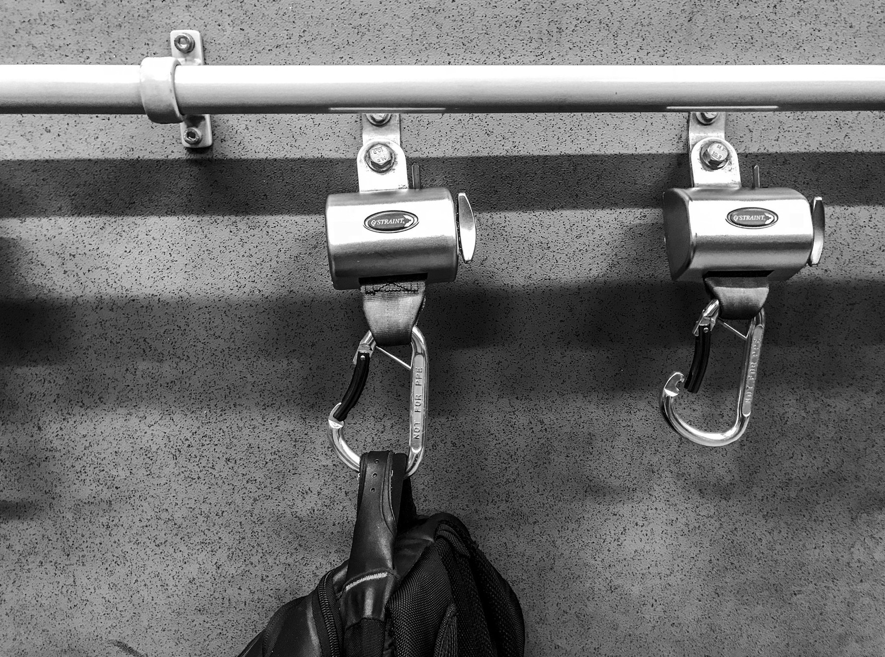

I hate air travel. Not the actual act of flying itself, but the experience around it. I hate waiting in lines, taking out the laptop for security check, waiting for the shuttle bus, waiting on the bus. I find all of it exhausting.
While airlines are trying to reduce the clutter and complication of the process, by introducing options like "online check-in", all that does is rearrange the process, shifting the frustration elsewhere. Now instead of waiting in line, I’m waiting for an app to update or a page to load. Instead, designers need to map out a customer journey, and streamline the process, and if done correctly, they’d find a myriad of smaller problems with simple solutions
One small, but annoying problem I face is where to keep my bag on the short journey in the shuttle bus. I take it off so I’m not always knocking into people. But at the same time, I don’t want to drop it on the floor of the bus. So I’m stuck awkwardly holding the bag in one hand, and holding the rail in the other.

Here’s a simple solution I found in one airport shuttle: a simple carabiner, attached to a rail on the side of the bus. Hook the bag on, it hangs down and doesn’t touch the floor, and my hands are free to hold the rail, pull out my boarding pass or check my phone.
It’s a very small solution, but one that makes a big difference. Big enough for me to remember at least. Design isn’t always just about big re-brands and disruptive product lines. It’s often just about understanding the many pain points in a customer journey, and coming up with simple solutions that can make an otherwise unpleasant experience just a little more bearable.